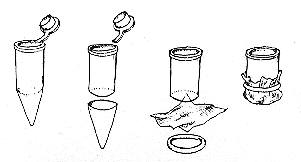

CHAPTER 8 - HISTOLOGICAL METHODS
Staining Whole-Mount Embryos with PAP
(Source: R. BreMiller)
1. Fix embryos in BT fixative for 4 to 6 hours at 4C.
2. Wash in 0.1 M PO4 buffer, pH 7.3, for 5 min.
3. Wash in dH2O for 5 min.
4. Freeze in acetone at -20C for 7 min to permeabilize the tissue.
5. Wash in dH2O for 5 min.
6. Wash in 0.1 M PO4 buffer for 5 min.
7. Treat with 2% normal goat serum in PBS/BSA/DMSO for 30 min to block non-specific binding sites.
8. Soak in primary antibody with 1% DMSO for 5 hr at RT or overnight at 4C. A shaker may be used to facilitate this process.
9. Wash for about 2 hr with frequent changes of PBS/BSA/DMSO.
10. Treat with secondary antibody diluted with PBS/BSA/DMSO overnight at 4C or for 5 hr at RT.
11. Wash as above in PBS/BSA/DMSO.
12. Treat with PAP diluted with PBS/BSA/DMSO for 5 hr at RT or overnight at 4C.
13. Wash for a minimum of 60 min in several changes of 1% DMSO in 0.1 M PO4 buffer.
14. To stain for HRP, presoak tissue in DAB solution for 15 min. Add H2O2. Development of color can be monitored under a dissecting scope. Reaction time is usually in the range of 5 to 15 min. Stop the reaction by adding 0.1M PO4 buffer. Wash in dH2O with several changes.
15. Dehydrate tissue through an alcohol series (50%, 70%, 85%, 95%, and twice in absolute EtOH, 5 min each) and clear in methyl salicylate.
16.Mount tissue in Permount between two coverslips, using strips of teflon tape or pieces of glass to serve as spacers. The tissue may also be stored in methyl salicylate and viewed using depression slides.
17. Instead of mounting in Permount the whole-mounts may be embedded in either epon or epon/araldite resin and sectioned:
Transfer tissue to fresh methyl salicylate for 10 min
Change to 1:1 methyl salicylate:resin overnight at RT
Two changes of fresh resin 2 hr each
Embed in fresh resin
Polymerize at 60C overnight
Cut 5 to 10 um sections with a glass knife
Dry down on a drop of dH2O
Coverslip in Permount
NOTES: To avoid tedious transfer of individual fish, use holders devised by cutting the end off BEEM capsules (used for embedding tissue for EM). Cover the bottom with a circle of mesh cut from dacron or silk organza and tie in place with dental floss.

Holders for fixed embryos
Plastic microwells (0.5 ml volume) can be used to hold solutions. Add fresh solutions by pipetting them on top of the tissue. When transfer-ring holders from one well to the next, drain mesh bottom briefly on Kimwipes. Small plastic petri dishes or Stender dishes can also be used, in which case several holders can be processed at the same time.
The stained embryos can be transferred to glass spot dishes for dehydration, removing the yolk if desired while transferring through alcohols. It is also possible to leave the tissue in the BEEM capsule holders while dehydrating.
A certain amount of flexibility in the staining schedule is possible. Thorough washing seems to be the most important factor in reducing background and should not be minimized.
Staining of 30 h fish or older is improved by adding Triton X-100 to a final concentration of 0.1% to 0.5% to all solutions.
The Zebrafish Book